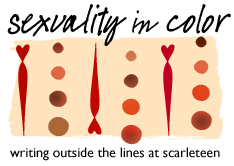

self-esteem
Sexuality: WTF Is It, Anyway?
How to Reconnect With Your Body In Spite of the Impact of White Supremacy
Scarleteen Mix #10: Pride (Good Trouble Edition)
Happy, happy, happy Pride, everyone! We're talking (and listening to) some good trouble right now. And if you're going to make some, you're going to need some anthems. Sam, Alice M., Izzy, Jacob and I crafted you a mix this time that's full of good trouble and we hope will power you up in all the best ways.
Man to Man: On Sex, Masculinity, and Being Yourself
Sexuality in Color: Two Amazing Pleasure and Radical Self-Love Teachers
It’s Chanté, back with more sexuality (in color) and intersectionality. If you appreciated last week’s definitions but are still curious or you want to learn even more, you may also find this video from Taryn Crenshaw helpful.
Scarleteen Mix #8: Strut Your Stuff
 Big day? Fighting with insecurity? Got a hot date? ARE the hot date? Starting a new project, school or job? Going to do something where everyone's watching? Coming out? Just got tested or asked for what you really, really wanted in bed for the first time?
Big day? Fighting with insecurity? Got a hot date? ARE the hot date? Starting a new project, school or job? Going to do something where everyone's watching? Coming out? Just got tested or asked for what you really, really wanted in bed for the first time?
Disability and Dating: I'm Sexy, Seated, and Single Forever
We had a great sex life but now I can't make him come anymore
Hello! Scarleteen is my go-to site when I have any questions about sex, and it’s helped me a lot, so thank you very much! Lately I've been going through a situation that is messing me up, and I'd like to ask for advice. I've been dating my boyfriend for 6 months. From the first night I met him, we had an amazing sexual chemistry and we wound up in bed together after every date....
I Just Want a Relationship
Hello. So I'm a 15 year old boy who is a freshman in high school. I suffer from anxiety, depression, OCD, and recovering from an eating disorder. Lately, I have been finding myself wanting to pursue a romantic and sexual relationship with a girl (I'm straight). No one in particular, I just want a relationship. But I feel like I have obstacles keeping me from one....
Scarleteen Confidential: How “Men Suck” Messes Everybody Up
Messages parents or guardians have given our users about gender come up frequently, and often problematically. As feminists and queer activists, we address gender stereotyping often in our content and conversations around women and gender nonconforming people of many stripes (or polka dots, whichever one prefers), and we know the weight of it all too well. But gender stereotyping is not just everybody’s problem, it’s a problem for everybody, and that includes for men, and the problems, for everybody, many gender stereotypes about men create.